このマラニックの3つの魅力
~ 紅葉 × グルメ × 温泉 ~
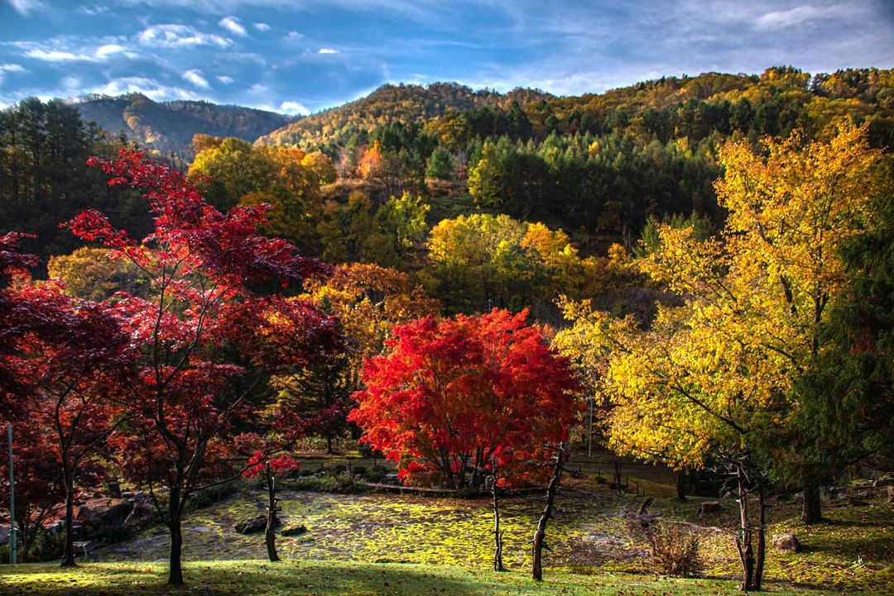
🍁 紅葉の絶景コース
水源公園や日本庭園など、秋色に染まる上砂川の名所をめぐる、写真映え必至のコース。

🍴 食の天国・豪華エイド
エゾシカロースト、ニジマス燻製、自家製カンパーニュなど。最大8か所の名物エイドで地元グルメを堪能。
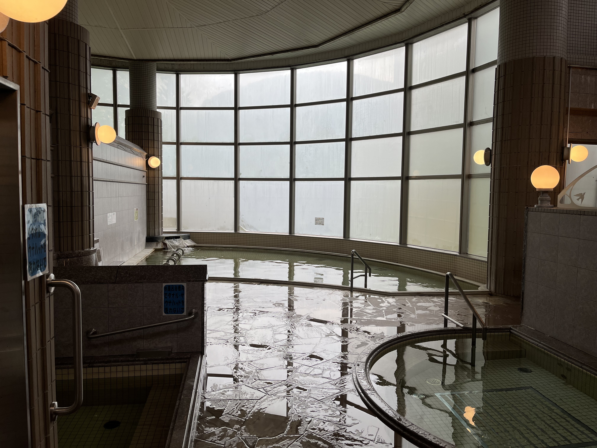
♨️ ゴール後の温泉
発着点はパンケの湯。走ったあとは温泉でリフレッシュ。入浴券は参加費に含まれています。
2026年10月10日(土) ｜ 雨天決行
北海道で一番小さな町を、紅葉と一緒にぐるっと一周。
豪華エイドと温泉が待つ、走って・歩いて・味わう“ご褒美ラン”。
走るだけじゃない。食べて、浸かって、つながる一日。
上砂川町は、面積わずか39.98㎢の「北海道で一番面積の小さな町」。
その町を、紅葉に染まる山々や水源公園・日本庭園・炭鉱館などの名所をめぐりながら一周します。
競技タイムを競うのではなく、自分のペースで走り、歩き、味わう「マラニック」スタイル。
地元の食材がならぶエイドと、ゴール後のパンケの湯が、頑張ったあなたを待っています。
エントリー開始まで
~ 紅葉とグルメに包まれた、あの感動をもう一度 ~
▲ 第2回大会の公式映像。コースの雰囲気やエイドの様子がわかります。
~ 紅葉 × グルメ × 温泉 ~

水源公園や日本庭園など、秋色に染まる上砂川の名所をめぐる、写真映え必至のコース。
エゾシカロースト、ニジマス燻製、自家製カンパーニュなど。最大8か所の名物エイドで地元グルメを堪能。

発着点はパンケの湯。走ったあとは温泉でリフレッシュ。入浴券は参加費に含まれています。
体力やご家族に合わせて選べます
| コース | 距離 | スタート | 定員 | 参加費(高校生以上/小中学生) |
|---|---|---|---|---|
| ファミリー | 約7km | 9:20 | 50名 | 4,000円 / 3,000円 |
| ショート | 約13km | 9:10 | 100名 | 4,000円 / 3,000円 |
| ロング | 約23km | 9:00 | 100名 | 5,000円 / 4,000円 |
※未就学児は無料（Tシャツ希望の場合は1,000円）／制限時間 9:00～15:00(6時間)
※コース：パンケの湯を発着点に、水源公園 → 日本庭園 → 市街地 → かみすながわ炭鉱館 などをめぐります。
上砂川と周辺の「おいしい」をめぐる旅
提供コースの目印： F＝ファミリー S＝ショート L＝ロング
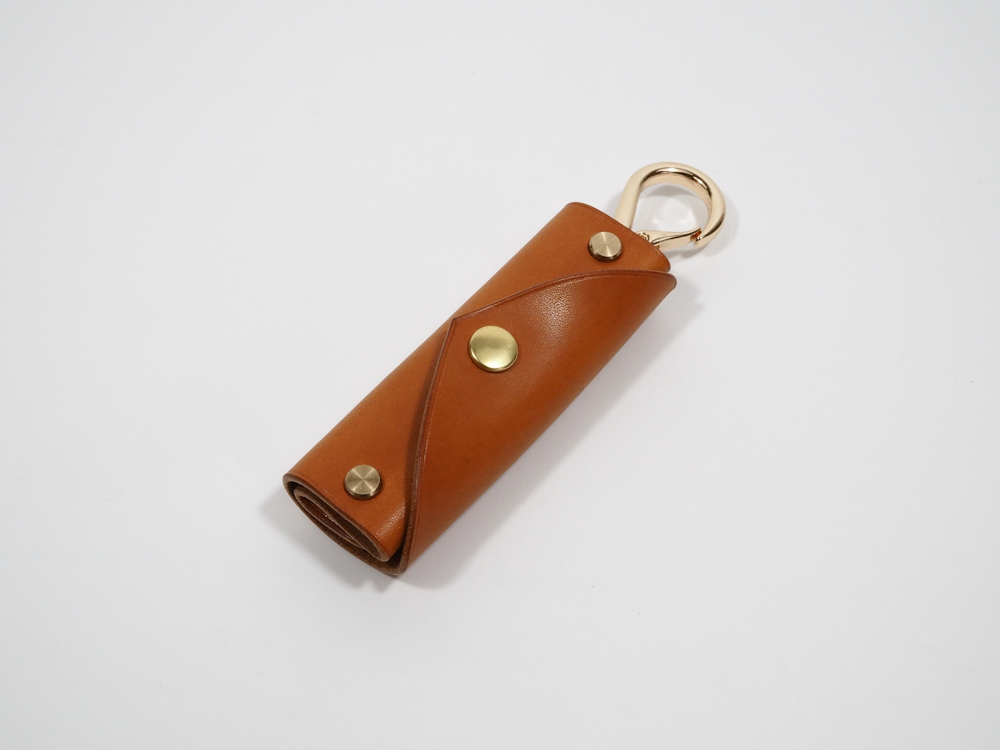
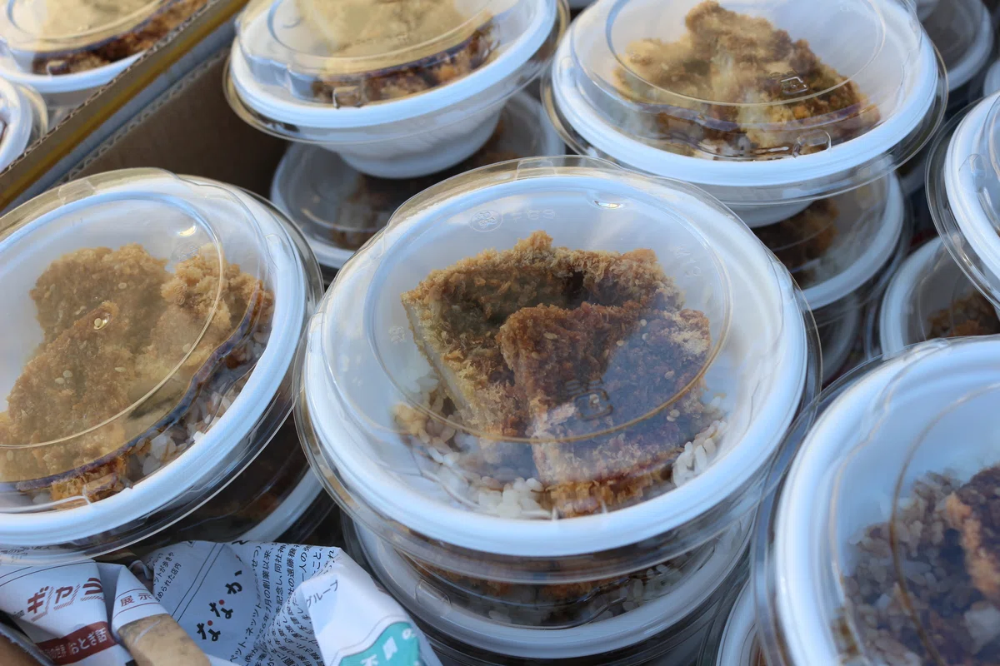
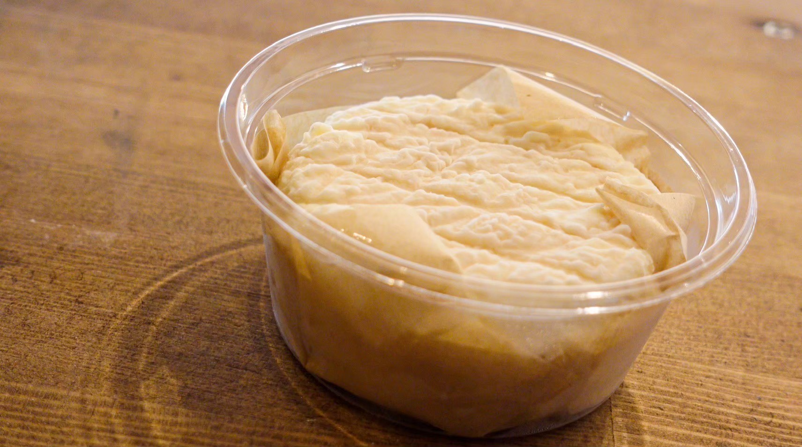
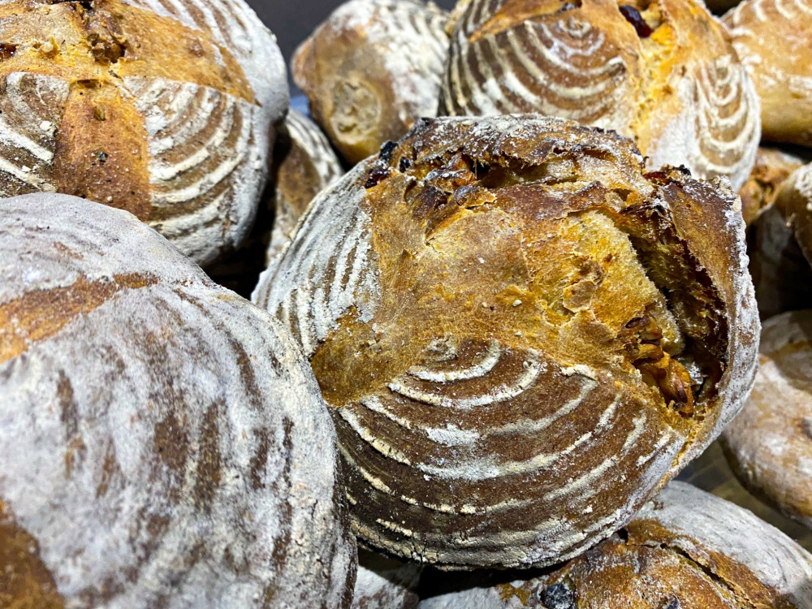
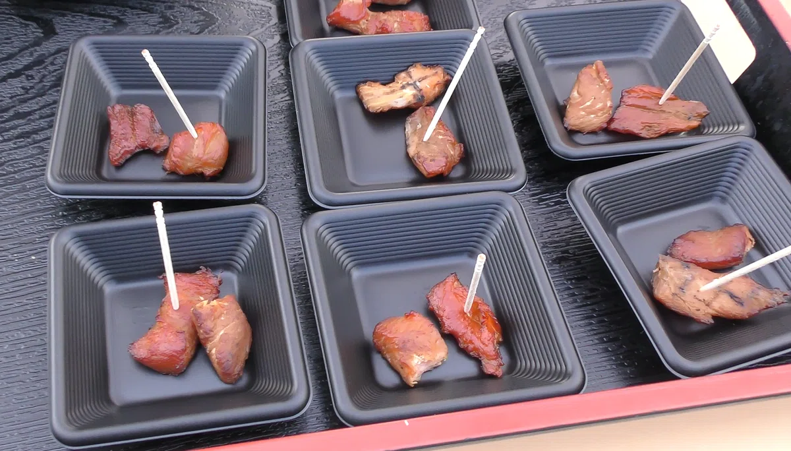
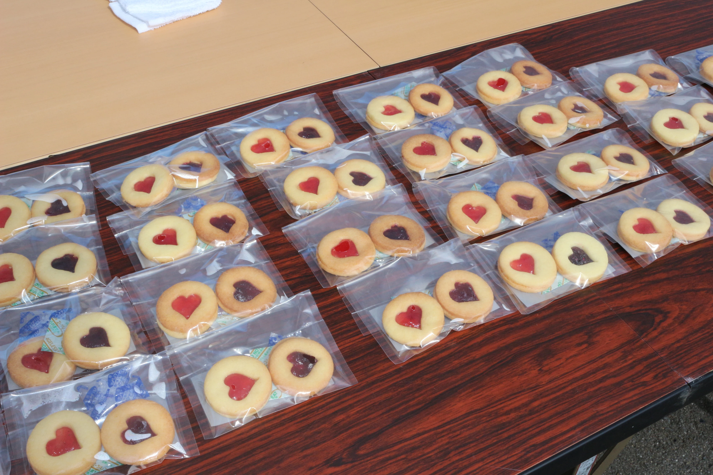
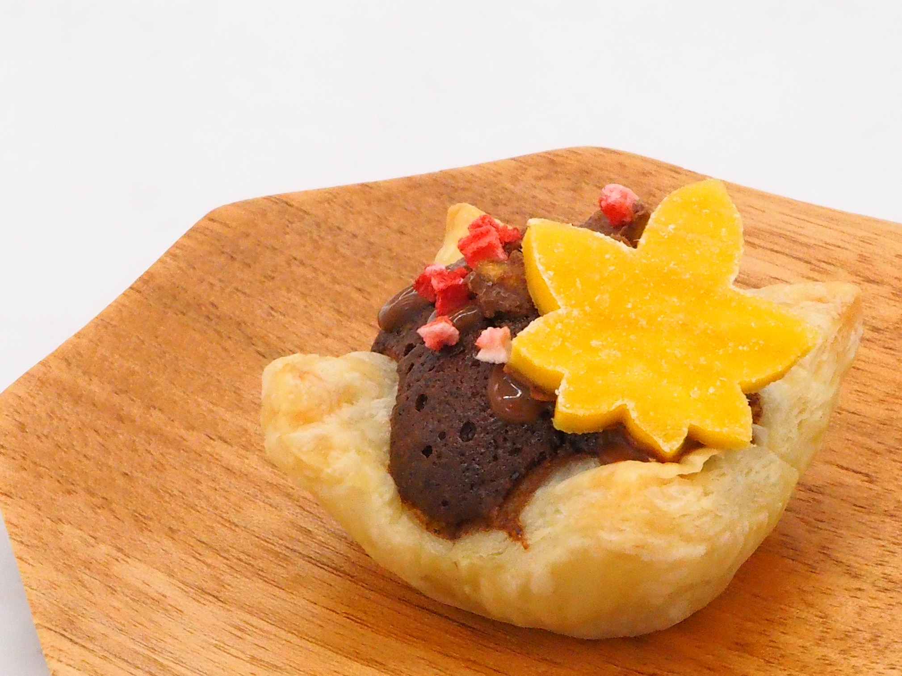
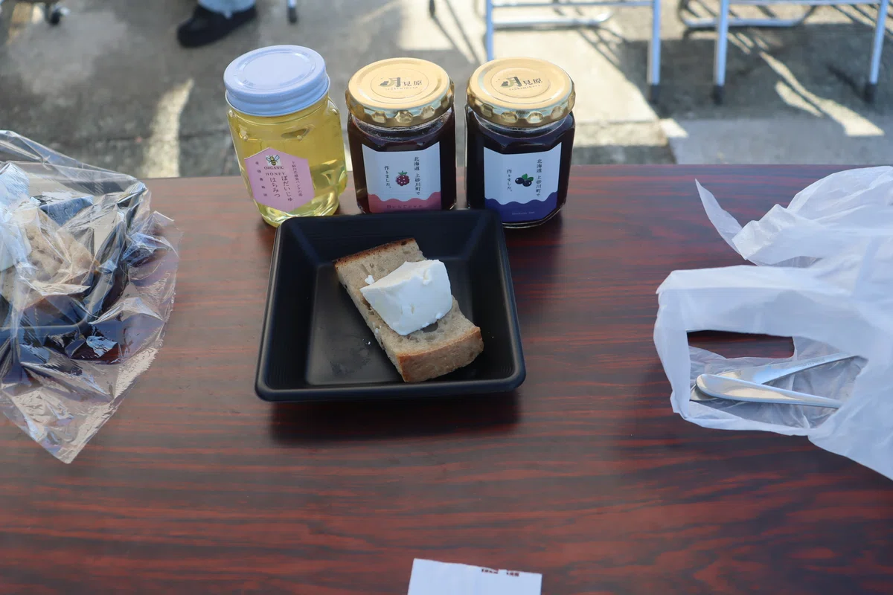
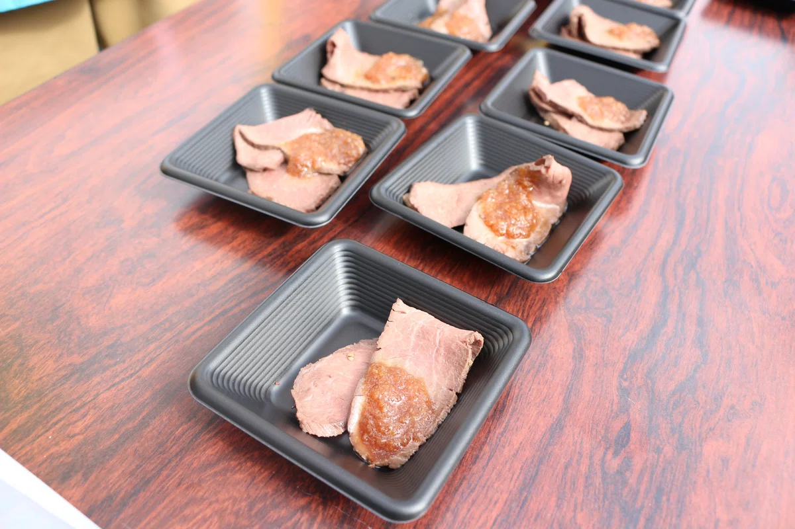
豪華ゲストと一緒に走ろう！
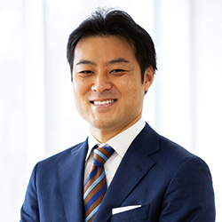
学校法人 田中学園 理事長
兼 北海道日本ハムファイターズ
スペシャルアドバイザー
株式会社65BASE 代表
頑張ったあなたへのご褒美
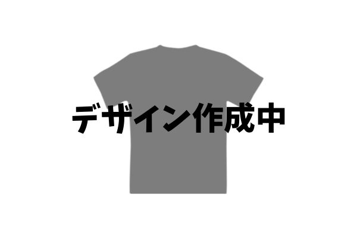
第4回記念オリジナルTシャツをプレゼント。SS～XL、100～150cmから選べます。
上砂川岳温泉パンケの湯の入浴券をプレゼント。走ったあとの温泉は格別です。
ゴール後は、手打ちそば・金滴酒造の日本酒・オアリパのトマトジュースで“ご褒美タイム”。頑張ったあとの一杯は格別です。
エントリー前にご確認ください
| 開催日 | 2026年10月10日(土) ※雨天決行(気象警報等の場合は主催者判断) |
|---|---|
| 会場・受付 | 上砂川岳温泉パンケの湯(スタート＆ゴール)／受付 7:45～8:30 |
| 募集期間 | 2026年7月1日～8月31日 ※定員になり次第締切 |
| 参加条件 | 体力に自信のある方／中学生以下は保護者同伴必須／交通ルールを守り当日誓約書を提出した方 ほか |
| 送迎バス |
①有料バス：JR札幌駅 ⇔ 会場(45名限定/往復3,000円/6:30発) ②無料バス：JR砂川駅 ⇔ 会場(8:05発) ※エントリー時に要選択 |
| その他 | 駐車場に限りがあるため乗り合わせ推奨／更衣室・荷物預かりあり/飲酒運転厳禁 |
大会の最新情報・お知らせは公式SNSで発信中
※ 最新情報はSNSにて随時更新しています。フォローして最新情報をお見逃しなく！
定員になり次第締め切ります。お申し込みはお早めに！
下記いずれかの方法でお申し込みいただけます。
📱 右のQRコードからもアクセスできます
📍 窓口・電話：上砂川町役場企画課(☎0125-62-2223)
※ LINE申込フォームはスマートフォンからのみご利用いただけます。